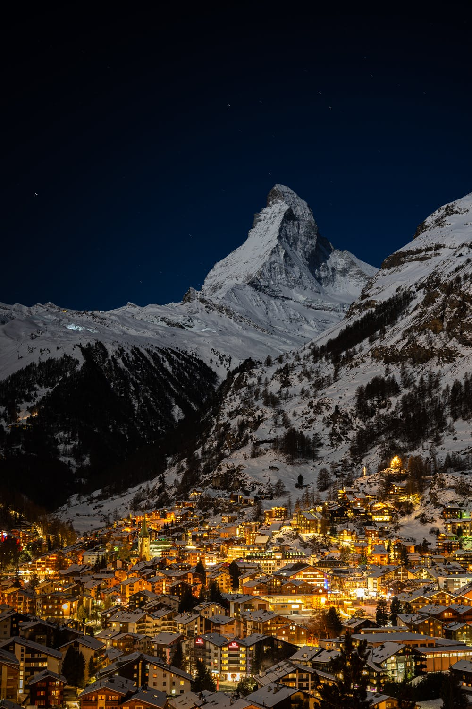

Markante Berge

Matterhorn bei Nacht

Eiger Nordwand
In der Schweiz gibt es eine Vielzahl an Bergen, wobei einige davon bekannt sind, durch ihr exponiertes Aussehen.
Die meisten dieser Berge findet man im Kanton Wallis. Dort findet man Berge von bis in eine Höhe von 4.500m über NN.
Am bekanntesten dieser Berge ist wohl das Matterhorn (4.478m über NN), gelegen im Wallis bei Zermatt.
Auch der Dom (4.545m über NN) ist bekannt als der höchste Berg der Ganzteilig in der Schweiz liegt.
Auch außerhalb des Wallis findet man 4.000er im Berner Oberland, wie die Jungfrau und den Mönch. Auch in dieser Gruppe findet man die Eiger Nordwand,
welche für ihre Schwierigkeit bekannt ist.